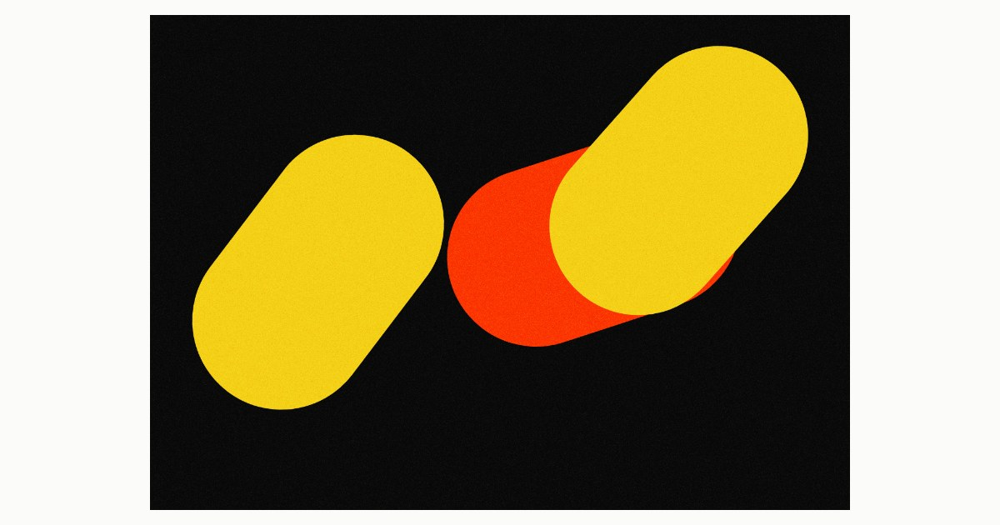

The capsules of PLLS given weather: mesh-gradient ground, film-grain skin. A capsule is not a shape — it is a distance between two points, given a thickness. The current direction of the work.
Las cápsulas de PLLS dotadas de atmósfera: fondo de degradado en malla, piel de grano de película. Una cápsula no es una forma — es una distancia entre dos puntos, con un grosor. La dirección actual del trabajo.
PLLSeko kapsulei atmosfera emanda: sare-gradientezko hondoa, film-pikorrezko azala. Kapsula bat ez da forma bat — bi punturen arteko distantzia bat da, lodiera batekin. Lanaren egungo norabidea.
A capsule is not a shape: it is a distance between two points, given a thickness. Placement is not arrangement: the rule decides how much they may overlap.